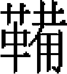

樂志一
元之樂制，雅樂施於郊廟，宴樂施於朝廷之燕享。雅樂之制有三：曰樂器，曰樂章，曰樂舞。宴樂之制有二：曰樂器，曰樂儀。然所謂雅樂，本宋之《大晟樂》，乃方士魏漢津所造者。善乎！吴淵穎之言也：
「太常所用樂，本《大晟》之遺法也。自東都不守，大樂氏奉其樂器北入燕都。燕都喪亂，又徙汴、蔡。汴、蔡陷没，而東平嚴侯獨得其故樂部人。國初，徵樂於東平，太常徐公典樂，奏於日月山，乞增宫縣、登歌、文武二舞，令舊工教習，以備大禮。故樂户子孫猶世籍河南，僅能肄其鐘鼓鏗鏘，不復究其義矣。吾因考求前代之樂，自和峴以下更六七人，而議論莫之有定。前日之宿縣者，未幾則倏已改鑄，或云樂失之清，或云樂過於濁，工冶卒且深厭其爐

鼓鑄之勞，則或和銅齊以濟之。當軒臨視，雖以老師宿儒，終不能必悟其銅齊之輕重，而徒論其銅律之清濁也。迨夫崇寧之世，魏漢津乃以蜀一黥卒，造《大晟樂府》，遂頒行於天下。蓋謂古之制樂者，惟黄帝、禹得樂之正，何則？聖人之禀賦，上與天地陰陽爲一體，聲爲律，身爲度。故黄帝、禹之製樂，實自其身得之。臣請以聖主中指三節三寸定黄鐘之律，中指之徑圍又據而定爲度量權衡。樂以是制，則臣將見其合天地之正，備陰陽之和，而得夫金石清濁之宜矣。當是時，惟丞相蔡京神其説，先鑄帝鼐成，復造金石鐘虡，雕鏤刻畫，蓋極後世之選已。然以帝之指尺長，而樂律遂高，雖漢津亦自知之。嘗私謂其弟子任宗堯曰：『律高則聲過哀，而國亂是不久矣。』嗚呼！漢津所製，豈復有加於和峴諸人所論之樂哉？然且至今沿襲相承，未聞有所改作。樂固不可以草創苟且而遽定也，雖然，崇寧之樂亦可變矣。蓋古之論樂者，一曰古雅樂，二曰俗部樂，三曰胡部樂。古雅樂更秦亂而廢，漢世惟采荆楚燕代之謳，稍協律吕以合八音之調，不復古矣。晉、宋、六朝以降，南朝之樂多用吴音，北國之樂僅襲北俗。及隋平江左，魏三祖清商等樂存者什四，世謂爲華夏正聲，蓋俗樂也。至是，沛國公鄭譯復因龜兹人白蘇祇婆善胡琵琶，而翻七調，遂以制樂。故今樂家猶有大石、小石、大食、般涉等調。大食等國本在西域，而般涉即是般瞻，華言羽聲，隋人且以是爲太羽矣。由是觀之，漢世徒以俗樂定雅樂，隋氏以來則以胡樂定雅樂。唐至玄宗，胡部坐俗部立。樂工肄樂，坐技不通，然後爲立技；立技不精，然後使教雅樂。天下後世不復知古雅樂之正聲矣。自唐歷宋，大抵皆然。當《大晟樂》書之行教坊，色長張俣曾制《大樂玄機賦》，論七音，六十律、八十四調，本不脱乎龜兹，白蘇祇婆之舊。正行四十大曲，常行小令四部絃管，此非胡與俗之雜行者乎？宜雅樂之未易遽復也。古來律曆二事，更相爲用，太史郭公一嘗定曆，誠曠世所未有。予謂宜依古法，緹室葭灰，隨月候氣。天地之中氣既應，則鐘律之中聲當無有不應者。要在久而後驗，樂固不可以草創苟且而遽定也。嗚呼！崇寧之樂亦可變矣，吾又安得夫伶倫榮猨之徒而與之論樂哉！」制樂始末
太祖入河西，徵西夏舊樂用之，其制未詳。太宗十年十一月，孔子五十一代孫衍聖公元措來朝，金之太常卿也。奏言：「今禮樂散失，金太常舊臣及禮册、樂器尚有存者，乞收録。」於是詔各處管民官，如有亡金知禮樂舊人，可并其家屬徙赴東平，令元措領之。十一年，元措奉命至燕京，得金掌樂許政、掌禮王節及樂工翟剛等九十二人。十二年夏四月，始命製登歌樂，肄習于曲阜宣聖廟。六皇后稱制三年，太常用許政所舉大樂令苗蘭詣東平，指授工人，造琴十張，一絃、三絃、五絃、七絃、九絃者各二。憲宗二年三月五日，命東平萬户嚴忠濟立局，製冠冕、法服、鐘磬、筍簴、儀物肄習。五月十三日，召太常禮樂人赴日月山。八月七日，郎中姚樞及魏祥卿、徐世隆等，以樂工李明昌、許政、吴德、段楫、寇忠、杜延年、趙德等五十餘人，見于行宫。帝問制作禮樂之始，世隆對曰：「堯、舜之世，禮樂興焉。」時明昌等各執鐘、磬、笛、簫、篪、塤、巢笙，於帝前奏之。曲終，復合奏之，凡三終。十一日，始用登歌樂祀昊天上帝于日月山。祭畢，命驛送樂工還東平。按《舊史·徐世隆傳》，世祖遣使至東平取登歌樂，世隆典領以行。未詳孰是。
三年，世祖居潛邸，命勾當東平府公事宋周臣兼領大樂禮官、樂工等人，常令肄習，仍令萬户嚴忠濟依已降旨存恤。六年夏五月，世祖次灤州，下教命嚴忠濟督宋周臣以所得禮樂舊人肄習，宜如故事勉行之，毋忽。冬十有一月，命樂工老不堪任事者，以子孫代之，不足者以他户補之。
中統元年春正月，命宣撫廉希憲等，召太常禮樂人至燕京。夏六月，命許唐臣等制樂器、公服、法服。秋七月十一日，用新製雅樂，享祖宗于中書省。禮畢，賜預祭官及禮樂人百四十九人鈔有差。八月，命太常禮樂人復還東平。二年秋九月，敕太常少卿王鏞領東平樂工，常加督視肄習，以備朝廷之用。初，大司農姚樞奏：「曲阜有太常雅樂，憲宗嘗命東平守臣輦其工人樂器，至日月山上，親臨觀之，飭東平守臣員缺充補，無輟講習。今請以東平府詳議官王鏞兼充禮樂提舉。」詔以鏞特兼太常少卿。三年，復命鏞教習大樂。
至元元年冬十有一月，括金樂器散在寺觀民家者。先是，括到燕京鐘、磬等器，凡三百九十有九事，下翟剛辨驗給價。至是，大興府又以所括鐘、磬樂器十事來進。太常因言：「亡金散失樂器，若止於燕京拘括，似爲未盡。合於各路各觀民家括之，庶省鑄造。」于是奏檄各道宣慰司，括到鐘三百六十有七，磬十有七，錞一，送于太常。又中都、宣德、平灤、順天、河東、真定、西京、大名、濟南、北京、東平等處，括到大小鐘、磬五百六十有九。其完者，景鐘二，鎛鐘十六，大聲鐘十，中聲鐘一，小聲鐘二十有七，編鐘百五十有五，編磬七。其不完者，景鐘四，鎛鐘二十有三，大聲鐘十有三，中聲鐘一，小聲鐘四十五，編鐘二百五十有一，編磬十有四。
三年，初用宫縣、登歌樂、文武二舞于太廟。先是，東平萬户嚴光範奏：「太常登歌樂器樂工已完，宫縣樂、文武二舞未備，凡用人四百一十二。請以東平漏籍户充之，合用樂器，官爲置備。」制可，命中書省臣議行。於是中書命左三部、太常寺、少府監，於興禪寺置局，委官楊天祐，太祝郭敏董其事，大樂正翟剛辨驗音律，充收受樂器官。丞相耶律鑄又言：「今製宫縣大樂，内編磬十有二簴，宜於諸處選石材爲之。」太常寺以新撥宫縣樂工、文武二舞四百一十二人，未習其藝，遣大樂署命許政往東平教之。大樂署言：「堂上下樂舞官員及樂工，合用衣服、冠冕、靴履等物，乞行製造。」中書禮部移準太常博士，議定制度，下所屬製造。
宫縣樂器既成［一］，大樂署郭敏開坐名數以上：編鐘、磬三十有六簴，樹鼓四，建鞞、應同一座。晉鼓一，路鼓二，鼗鼓二，相鼓二，雅鼓二，柷一，敔一，笙二十有七，巢和竽。塤八，箎、簫、籥、笛各十，琴二十有七，瑟十有四，單鐸、雙鐸、鐃、錞、鉦、麾、旌、纛各二。補鑄編鐘百九十有二，靈壁百磬如其數。省臣言：「太廟殿室向成，宫縣樂器咸備，請徵東平樂工赴京師肄習，以俟享廟。」從之。秋七月，新樂服成，樂工至自東平，敕翰林院定撰八室樂章。按中統四年至至元三年，皆以太祖爲第一室，故僅有七室樂章。是年始追尊烈祖爲第一室，故有八室也。大樂署編運舞節，俾肄習之。
冬十有一月，有事于太廟，宫縣、登歌樂，文武二舞咸備。其迎送神曲曰《來成》之曲，送神或作《保成》。烈祖曰《開成》之曲，太祖曰《武成》之曲，太宗曰《文成》之曲，皇伯考赤朮曰《弼成》之曲，皇伯考察合帶曰《協成》之曲，睿宗曰《明成》之曲，定宗曰《熙成》之曲，憲宗曰《威成》之曲。初獻、升降曰《肅成》之曲，司徒奉俎曰《嘉成》之曲，文舞退，武舞進曰《和成》之曲，亞終獻、酌獻曰《順成》之曲，徹豆曰《豐成》之曲。文舞曰《武定文綏之舞》，武舞曰《内平外成之舞》。第一成象滅王罕，二成破西夏，三成克金，四成收西域、定河南、五成取西蜀、平南詔，六成臣高麗、交趾。詳見樂舞篇。
十有二月，籍近畿儒户三百八十四人爲樂工。先是，召用東平樂工凡四百一十二人，中書以東平地遠，惟留其户九十有二，餘盡遣還，復入民籍。
六年，詔太保劉秉忠與許衡、徐世隆等起朝儀。秉忠奏曰：「無樂以相須，則禮不備。」詔搜訪舊教坊樂工，得杖鼓色楊皓，笛色曹植，前行色劉進，教師鄭忠。依律運譜，被諸樂歌，六月而成。陳於萬壽山便殿，帝聽而善之。明年二月，秉忠奏以丙子觀禮。前期一日，布綿蕝金帳殿前，帝與皇后臨觀，禮文樂節悉無遺失。
十一年秋八月，製内庭曲舞。中書以上皇帝册寶，下太常大樂署編運無射宫《大寧》等曲，及上壽曲譜。當時議殿庭用雅樂，後不果用。十一月，增樂工八百人隸教坊司，是年，敕中都路建習樂堂，使樂工肄業其中。
四年，太常寺言：「自古帝王功成作樂，各有名，盛德形容，於是乎在。伏覩皇上踐阼以來，留心至治，聲名文物，思復承平之舊。首敕有司，脩完登歌、宫縣、八佾樂舞，以備郊廟之用。若稽古典，宜有徽稱。謹案歷代樂名。黄帝曰《咸池》、《龍門》、《大卷》，少昊《大淵》，顓頊《六莖》，高辛《五英》、唐堯《大咸》、《大章》，虞舜《大韶》，夏禹《大夏》，商湯《大濩》、周武《大武》。降及近代，咸有厥名。宋總名曰《大晟》，金總名曰《大和》。今採輿議，權以數名，伏乞詳定。曰《大成》：按《尚書》『簫韶九成，鳳凰來儀』，《樂記》曰『王者功成作樂』，《詩》云『展也大成』曰《大明》：按《白虎通》言『如唐堯之德，能大明天人之道』曰《大順》：《易》曰『天之所助者順』，又曰：『順乎天而應乎人』曰《大同》：《樂記》曰『樂者爲同，禮者爲異』，《禮運》曰『大道之行也，故人不獨親其親，不獨子其子，是之謂大同』曰《大豫》：《易》曰『豫順以動，故天地如之』，《象》曰『雷出地奮，豫。先王以作樂崇德，殷薦之上帝，以配祖考』。」中書省遂定名曰《大成之樂》。
乃上表稱賀，表曰：「離日中天，已覩文明之化；豫雷出地，又聞正大之音。神人以和，祖考來格。欽惟皇帝陛下，潤色洪業，游意太平，爰從龍邸之潛，久敬鳳儀之奏。及登寶位，申命鼎司，謂雖陳堂上之登歌，而尚闕庭前之佾舞。方嚴禋祀，當備聲容，屬天語之一宣，迺春官之畢會。臣等素無學術，徒有汗顔，聿求舊署之師工，仍討累朝之典故。按圖索器，永言和聲，較鐘律於積黍之中，續琴調於絶絃之後。金而模，石而琢，簴斯豎，筍斯横。合八音而克諧，閲三歲而始就。列文武兩階之干羽，象帝王四面之宫庭。一洗哇淫之聲，可謂盛大之舉。既完雅器，未錫嘉名。蓋聞軒、昊以來，俱有《咸》、《雲》之號。《莖》、《英》、《章》、《韶》以象德，《夏》、《濩》、《武》、《勺》以表功。洪惟國朝，誕受天命，地大物鉅，人和歲豐。宜符古記之文，稱曰《大成之樂》。漢庭聚議，作章敢望於一夔；舜殿鳴絃，率舞願觀於百獸。」
十三年，以近畿樂户多逃亡，僅得四十有二，復徵用東平樂工。十六年冬十月，命太常卿忽都于思召太常樂工。是月十一日，大樂令完顔椿等以樂工見于香閣，文郎魏英舞迎神黄鐘宫曲，武郎安仁舞亞獻無射宫曲。十八年冬十月，昭睿順聖皇后將祔廟，製昭睿順聖皇后室曲舞。
十九年，王積翁奏請徵亡宋雅樂器至京師，置於八作司。
二十年冬閏十有一月，太常卿忽都于思奏：「大樂見用石磬，聲律不協。稽諸古典，磬石莫善於泗濱，女真未嘗得此。今泗在封疆之内，宜取其石以製磬。」從之。選審聽音律大樂正趙榮祖及識辨磬材石工牛全，詣泗州採之。得磬璞九十，製編磬二百三十，命大樂令陳革等料簡，應律者百有五。二十一年，大樂署言：「宜付本署收掌。」中書命八作司與之，鎛鐘二十有七，編鐘七百二十有三，特磬二十有二，編磬二十有八，鐃六，單鐸、雙鐸各五，鉦、錞各八。
是年，復括江南樂工。明年正月，徙江南樂工八百家於京師。
二十三年，忽都于思又奏：「太廟樂器，編鐘、笙、匏，歲久就壞，音律不協。」遂補編鐘八十有一，合律者五十，造笙匏三十有四。舊紀作二十六年事，誤也。二十九年四月，太常太卿香山請采石增製編磬，遣孔鑄馳驛往泗州，得磬璞五十八，製磬九十。大樂令毛莊等審聽之，得應律磬五十有八，於是編磬始備。
三十年夏六月，初立社稷，命大樂許德良運製曲譜，翰林國史院譔樂章。其降送神曰《鎮寧》之曲，初獻、盥洗、升壇、降壇、望瘞位皆《肅寧》之曲，正配位奠玉幣曰《億寧》之曲，司徒奉俎徹豆曰《豐寧》之曲，正配位酌獻曰《保寧》之曲，亞終獻曰《咸寧》之曲。按祭社稷、先農及大德六年祀天地五方帝，樂章皆用金舊名。釋奠宣聖，亦因宋不改。詳樂章篇。三十一年，世祖、裕宗祔廟，命大樂署編運曲譜舞節，翰林定譔樂章，世祖室曰《混成》之曲，裕宗室曰《昭成》之曲。是年，初祀社稷，用堂上樂，歲以爲常。
大德六年三月、合祀昊天上帝、皇地祇、五方帝於南郊，撰定樂章。降神奏《乾寧》之曲，初獻、盥洗奏《肅寧》之曲，初獻，升降奏《肅寧》之曲，奠玉幣奏《億寧》之曲，迎俎奏《豐寧》之曲，酌獻奏《嘉寧》之曲，亞終獻奏《咸寧》之曲，徹俎奏《豐寧》之曲，送神奏《鎮寧》之曲，望燎奏《肅寧》之曲。
大德九年，新建郊壇既成，命大樂署編運曲譜舞節，翰林譔樂章。十一月二十八日，祀圜丘用之。其迎送神曰《天成》之曲，初獻奠玉幣曰《欽成》之曲，酌獻曰《明成》之曲，登降曰《隆成》之曲，亞終酌獻曰《和成》之曲，奉饌徹豆曰《寧成》之曲，望燎如登降。惟用黄鐘宫。文舞曰《崇德之舞》，武舞曰《定功之舞》。
十年，命江浙行省製造宣聖廟樂器，以宋舊樂工施德仲審較應律，運至京師。秋八月，用于廟祀宣聖。先令翰林新譔樂章，命樂工習之。降送神曰《凝安》之曲，初獻、盥洗、陞殿、降殿、望瘞皆《同安》之曲，奠幣曰《明安》之曲，奉俎曰《豐安》之曲，酌獻曰《成安》之曲，亞終獻曰《文安》之曲，徹豆曰《娱安》之曲。蓋舊曲也，新樂章不果用。時樂師皆江南人，肄業生徒則河北人，情性不相能。國子博士虞集親教之，然後成曲焉。
十一年，武宗即位，祭告天地，命大樂署編運皇地祇酌獻大吕宫一曲及舞節，翰林譔樂章。無名曲。九月，順宗、成宗二室祔廟，下大樂署編運曲譜舞節，翰林譔樂章。順宗室曰《慶成》之曲，成宗室曰《守成》之曲。
至大二年，親享太廟。皇帝入門奏《順成》之曲，盥洗、升殿用至元中初獻升降《肅成》之曲，亦曰《順成》之曲，出入小次奏《昌寧》之曲，迎神用至元中《來成》之曲，改曰《思成》，初獻、攝太尉盥洗、升殿奏《肅寧》之曲，酌獻太祖室仍用舊曲，名《開成》，《開成》本至元中烈祖曲名，其詞則太祖舊曲也。睿宗室仍用舊曲，改名《武成》，此亦至元中太祖曲名，其詞則「神祖創業」以下仍舊。皇帝飲福、登歌奏《釐成》之曲，新製曲。文舞退、武舞進，仍用舊曲，改名《肅寧》，舊名《和成》，其詞「天生五材，孰能去兵」以下是也。亞終獻、酌獻仍用舊曲，改名《肅寧》，舊名《順成》，其詞「幽明精禋」以下是也。徹豆曰《豐寧》之曲，舊名《豐成》，詞語亦異。送神曰《保成》之曲，皇帝出廟庭亦曰《昌寧》之曲。《太常集禮》曰：「樂章據孔思逮本録之。國朝樂皆用『成』字，凡有『寧』字者，金曲也。國初，禮樂章之事，悉用前代舊工，循習故常，遂有用其舊者。亦有不用其詞，而冒以舊號者，如郊祀先農等樂是也。」按至元四年，已改《和成》、《順成》、《豐成》之名，而至大中反改從金舊，必無此理。此承孔思逮之誤也。舊志第三卷至大樂章，「文舞退、武舞進，奏《肅成》之曲，亞終酌，奏《肅成》之曲」，注：「孔本作《肅寧》。可證。」思逮誤以「肅成」爲「肅寧」也。
冬十有二月，始製先農樂章，以太常登歌樂祀之。先是，有命祀先農以登歌樂，如祭社稷之制。大樂署言「禮祀先農如社」，遂録祭社林鐘宫《鎮寧》等曲以上，蓋金曲也。三年冬十月，置曲阜宣聖廟登歌樂。初，宣聖五十四代孫左三部照磨思逮言：「闕里宣聖祖廟，釋奠行禮久闕，祭服登歌之樂，未蒙寵賜。如蒙移咨江浙行省，於各處贍學祭餘子粒内，製造登歌樂器及祭服，以備祭祀，庶盡事神之禮。」中書允其請，移文江浙製造。至是，樂器成，運赴闕里用之。十有一月，敕以二十三日冬至，祀昊天上帝于南郊，配以太祖，令大樂署運製配位及親祀曲譜舞節，翰林譔樂章。皇帝出入中壝黄鐘宫曲二，盥洗黄鐘宫曲一，陞殿登歌大吕宫曲一，酌獻黄鐘宫曲一，飲福登歌大吕宫曲一，出入小次黄鐘宫曲一。皆無曲名。四年夏六月，武宗廟祔，命樂正謝世寧等編曲譜舞節，翰林侍講學士張土觀譔樂章，曲名《威成》之曲。
皇慶二年秋九月，用登歌樂祀太上皇睿宗。于真定玉華宫。自是，歲用之。至延祐七年九月，敕議玉華宫歲享睿宗登歌大樂，太常博士言：「影堂用太常禮樂，非是。」十月，罷之。舊志作三月，今從本紀。延祐五年，命各路府宣聖廟置雅樂，選擇習古樂師教肄生徒，以供春秋祭祀。六年秋八月，議置三皇廟樂，不果行。七年，仁宗祔廟，命樂正劉瓊等編運酌獻樂譜舞節，翰林譔樂章，曲名曰《歆成》之曲。
至治元年正月，始以四孟月時饗親祀，太室備宫縣、登歌二舞。二年冬十月，用登歌樂于太廟。以修廟工役未畢，妨陳宫縣，止用登歌。泰定元年，英宗祔廟，下大樂署編運樂譜舞節，翰林譔樂章，曲曰《獻成》之曲。文宗天曆二年，明宗祔廟，下大樂署編運樂譜舞節，翰林定譔樂章，曲曰《永成》之曲。至順元年十月，始祀昊天上帝於南郊，以太祖皇帝配，備宫縣、登歌二舞。元統二年，文宗祔廟，行三獻禮，樂用宫縣。至正十年九月，始祭三皇廟，命翰林譔樂章。
登歌樂器
金部：編鐘一簴，鐘十有六，範金爲之，筍簴横曰筍，植曰簴。皆雕繪樹羽，塗金雙鳳五，中列博山，崇牙十有六，縣以紅絨組。簴跌青龍籍地，以緑油卧梯二，加兩跗焉。筍兩端金螭首，銜鍮石壁翣，五色銷金流蘇，絛以紅絨維之。鐵者四，所以備欹側。在太室以礙地甓，因易以石麟。簴額識以金飾篆字。擊鐘者以茱萸木爲之，合竹爲柄。凡鐘未奏，覆以黄羅；雨，覆以油絹。磬亦然。元初，鐘用宋、金舊器，其識曰「大晟」、「大和」、「景定」者是也。後增製，兼用之。
石部：編磬一簴，磬十有六，石爲之。縣以紅絨紃，簴跗狻猊。拊磬者，以牛角爲之。餘筍簴、崇牙、樹羽、壁翣、流蘇之制，並與鐘同。元初，磬亦用宋、金舊器。至元中，始采泗濱靈壁石爲之。
絲部：琴十，一絃、三絃、正絃、七絃、九絃者各二。六皇后監國三年，始造。斲桐爲面，梓爲底，冰絃，木軫，漆質，金徽。長三尺九寸。首闊五寸二分，通足中高二寸七分，旁各高二寸。尾闊四寸一分，通足中高二寸，旁各高一寸五分。俱以黄綺夾囊之。琴卓髹以緑。琴四。其制，底面皆用梓木，面施采色，兩端繪錦。長七尺。首闊尺有一寸九分，通足中高四寸，旁各高三寸。尾闊尺有一寸七分，通足中高五寸，旁各高三寸五分。朱絲爲絃，凡二十有五，各設柱，兩頭有孔，疏通相連，以黄綺夾囊之。架四，髹以緑，金飾鳳首八。
竹部：簫二，編竹爲之。每架十有六管，闊尺有六分。黑槍金鸞鳳爲飾，鍮石釘鉸，以黄紃絨維於人項，左右復垂紅絨絛結。架以木爲之，高尺有二寸，亦號排簫，韜以黄囊。笛一，斷竹爲之。長尺有四寸，七孔，亦號長笛。纏以朱絲，垂以紅絨絛結，韜以黄囊。籥二，制如笛，三孔。纏以朱絲，垂以紅絨絛，韜以黄囊。篪二，髹色如桐葉，七孔。纏以朱絲，垂以紅絨絛結，韜以黄囊。
匏部：巢笙四，和笙四，七星匏一，九曜匏一，閏餘匏一，皆以斑竹爲之。玄髹底，置管匏中，施簧管端，參差如鳥翼。大者曰巢笙，次曰和笙，管皆十九，簧如之。十三簧者曰閏餘匏。九簧者曰九曜匏，七簧者曰七星匏。皆韜黄囊。
土部：塤二，陶土爲之。圍五寸半，長三寸四分，形如稱錘。六孔，上一，前二，後三。韜以黄囊。
革部：搏拊二，制如鼓而小，中實以糠，外髹以朱，繪以緑雲，繫以青絨絛。兩手用之，或搏或拊，以節登歌之樂。
木部：柷一，以桐木爲之，狀如方桶，繪山於上，髹以粉，旁爲圓孔，納椎於中，椎以杞木爲之。撞之以作樂。敔一，製以桐木，狀如伏虎，彩繪爲飾，背有二十七鉏鋙刻，下承以槃。用竹長二尺四寸，破爲十莖，其名曰籈，櫟其背以止樂。
宫縣樂器
金部：鎛鐘十有二簴，簴一鐘，制視編鐘而大，依十二辰位特縣之，亦號辰鐘。筍簴朱髹，塗金、彩繪飛龍、跗東青龍，西白虎，南赤豸，北玄麟。素羅五色流蘇。餘制並與編鐘同。編鐘十有二簴，簴十有六鐘，制見《登歌》。此下樂器制與《登歌》同者，皆不重載。按至元元年，中都等處括到亡金樂器，其完者景鐘二，此北宋崇寧中所鑄者［二］，惟不知何以有二也。
石部：編磬十有六簴，簴十有二磬，制見《登歌》。筍簴與鎛鐘同。
絲部：琴二十有七，至元三年造。二絃者三，三絃、五絃、七絃、九絃者各六。瑟十有二。按古制，琴惟五絃、七絃。宋太宗加爲九絃，又作兩儀琴二絃，更有一絃、三絃，皆非古。《大晟樂》罷一、三、九弦不用，又並七弦罷之。後俱復用。元沿襲宋制，不改。
竹部：簫十，籥十，箎十，笛十。
匏部：巢笙十。竽十，竹爲之。與巢笙皆十九簧，惟指法各異。七星匏一，九曜匏一，閏餘匏一。土部：塤八。
革部：晉鼓一，長六尺六寸，面徑四尺，圍丈有二尺，穹隆者居鼓面三之一。穹徑六尺六寸三分寸之一，面繪雲龍爲飾，其皋陶以朱髹之。下承以彩繪趺座，並鼓高丈餘，在郊祀者，鞔以馬革。按晉鼓，古所以鼓金奏，建於軍。宋制晉鼓爲樂節，乃李照之失，元誤沿其制也。樹鼓四，每樹三鼓，其制高六尺六寸，中植以柱，曰建鼓。柱末爲翔鷺，下施小圓輪。又爲重斗，方蓋，並繚以彩繪。四角有竿，各垂壁翣流蘇。下以青狻猊四爲趺。建旁挾二小鼓，曰鞞，曰應，樹樂縣之四隅。踏床、鼓桴、並髹以朱。按建、鞞、應三鼓同一座，亦沿宋制之誤。雷鼓二，制如鼓而小，鞔以馬革，特其柄播之，旁耳自擊。郊祀用之。雷鼗二，亦以馬革鞔之，爲大小鼓三，交午貫之以柄。郊祀用之。路鼓二，制如雷鼓，惟非馬革，祀宗廟用之。路鼗二，其制爲大小二鼓，午貫之，旁各有耳，以柄摇之，耳往還自擊，不以馬革。祀宗廟用之。
木部：柷一，敔一。
節樂之器
麾一：製以絳繒，長七尺，畫升龍於上，以金塗龍首朱杠縣之，樂長執之，舉以作樂，偃以止樂。
照燭二：以長竿置絳羅籠於其末，然燭於中，夜暗，麾遠難辨，樂正執之，舉以作樂，偃以止樂。
文舞器
纛二：制若旌幢，高七尺，杠首刻象牛首，下施朱繪蓋爲三重，以導文舞。
籥六十有四：木爲之，象龠之制，舞人所執。
翟六十有四：木柄，端刻龍首，飾以雉羽，綴以流蘇，舞人所執。
武舞器
旌二：制如纛，杠首栖以鳳，以導武舞。
干六十有四：木爲之，加以彩繪，舞人所執。
戚六十有四：制若劍然，舞人所執。《禮記》注。「戚，斧也。」今制與古異。
金錞二：範銅爲之，中虚，鼻象狻倪，木方趺。二人舉錞，築於趺上。
金鉦二：制如銅槃，縣而擊之，以節樂。
金鐃二：制如火斗，有柄，以桐爲匡，疏其上如鈴，中有丸。執其柄而摇之，其聲鐃鐃然，用以止鼓。
單鐸、雙鐸各二：制如小鐘，上有柄，以金爲舌，用以振武舞。兩鐸通一柄者，號曰雙鐸。
雅鼓二：制如漆筩，鞔以羊革，旁有兩紐，工人持之，築地以節舞。
相鼓二：制如搏拊，以韋爲表，實之以糠，拊其兩端，以相樂舞節。
鼗鼓二。
舞表
表四：木杆，鑿方石樹之，用以識舞人之兆綴。
樂縣
凡郊祀、宗廟，用宫縣三十六虡，登歌二虡。祀前一日，宿懸於庭中，東方、西方設十二鎛鐘，各依辰位。編鐘處其左，編磬處其右。黄鐘之鐘起子位，在通街之西。蕤賓之鐘起午位，在通街之東。每辰三虡，謂之一肆。十有二辰，凡三十六虡。樹建鞞應於四隅，左柷右敔，設縣中之北。歌工次之，三十二人，重行相向而坐。凡工坐者，高以杌，地以氈。巢笙次之，簫次之，竽次之，籥次之，篪次之，塤次之，長笛又次之。夾街之左右，瑟翼柷敔之東西，在前行，路鼓、路鼗次之。郊祀則雷鼓、雷鼗。閏餘匏在簫之東，七星匏在西，九曜匏次之。一絃琴三，列路鼓之東西，東一，西二。三絃、五絃、七絃、九絃皆六，次之。晉鼓一，處縣中之東南，以節樂。又設登歌樂於殿之前楹。殿陛之旁，設樂牀，二樂工列於上。搏拊二，歌工六，柷一，敔一，在門内，相向而坐。鐘一虡，在前楹之東，一絃、三絃、五絃、七絃、九絃琴五，次之，瑟二，在其東。笛一、籥一、篪一，在琴之南。巢笙、和笙各二，次之。塤一，在笛之南。閏餘匏、排簫各一，次之，皆西上。磬一虡，在前楹之西。一絃、三絃、五絃、七絃、九絃琴五，次之。瑟二，在其西。一笛、一籥、一篪，在一瑟之南。巢笙、和笙各二，次之，塤一，在笛之南。七星匏、九曜匏、排簫各一，次之，皆東上。舊志「前楹西五琴」之下，奪二十三字，據王圻《續文獻通考》補。攝祀設宫縣之樂於庭中，東方、西方，磬虡起北，鐘虡次之。南方、北方磬虡起西，鐘虡次之。設十二鎛鐘於編縣之間，各依辰位。樹建鼓於四隅。置柷敔於北縣之内。柷一在道東，敔一在道西。路鼓一，在柷之東南。晉鼓一，在敔後。又路鼓一，在柷之西南。諸工人各於其後。東方、西方，以北爲上，南方、北方，以西爲上。文舞在北，武舞在南，立舞表於兆綴之間。又設登歌之樂於殿上前楹間。玉磬一虡，在西，金鐘一虡，在東。柷一，在玉磬北，稍東。搏拊二，一在敔北，一在柷北，東西相向。歌工次之，餘工各位於縣後，其匏竹者，立於階間，重行北向，相對爲首。
【校勘記】
［一］「宫縣」，原作「官縣」，據《元史》卷六八志第十九《禮樂二》改。
［二］「北宋」，原作「北京」，據《續文獻通考》卷一〇九《樂考》改。
本章完!